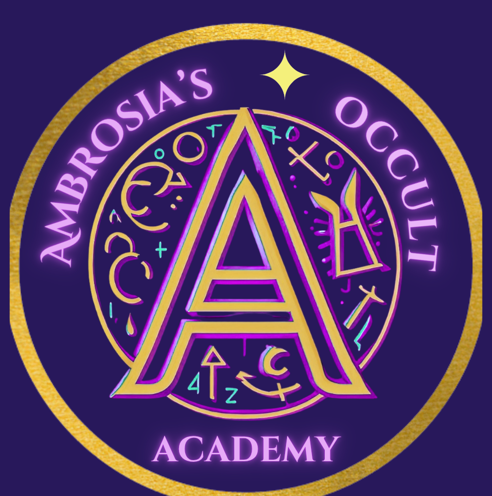
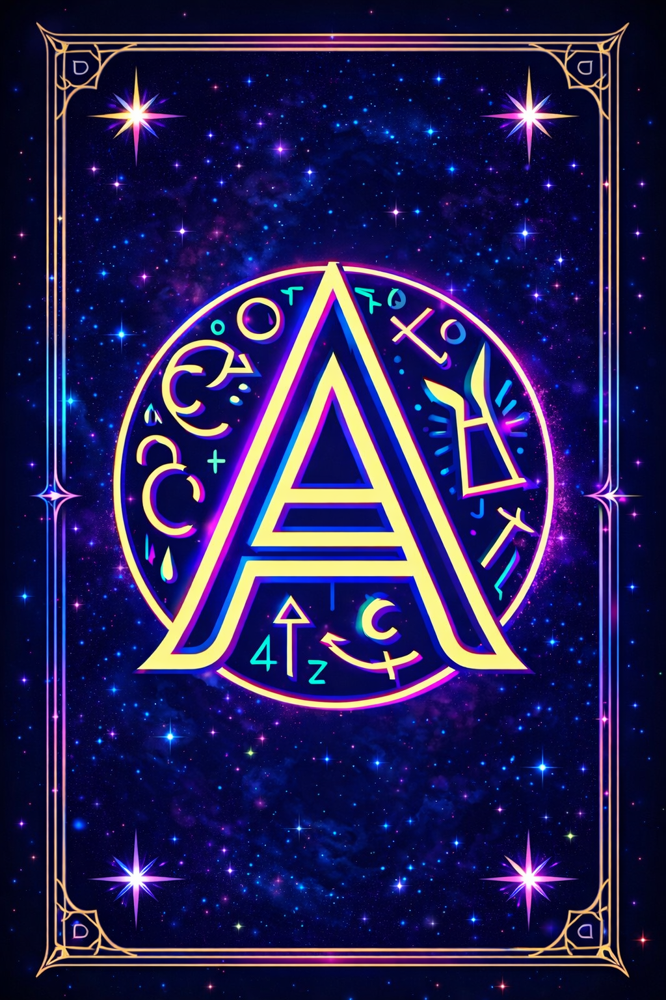

Celestial guidance, mystical education, and practical magic for modern seekers.
Jennifer Ambrosia is the intuitive guide behind Ambrosia's Occult Academy — a lifelong empath, seeker of cosmic truth, and mother whose path has been shaped by love, resilience, and a deep connection to the unseen.
Raised in San Diego, Jennifer discovered her intuitive gifts early. By her teens she was already exploring palmistry, astrology, tarot, meditation, and the subtle energies that shape our lives. What began as curiosity grew into a calling: to understand the mysteries of the universe and help others understand their own.
Today, she's a proud mother of three: a son serving in the U.S. Navy, a daughter studying Meteorology in New York (and raising a bright little star of her own), and a spirited nine‑year‑old daughter she raises as a single parent in Las Vegas. Together they enjoy camping under desert skies, music festivals, and late‑night drives to Area 51 — because yes, she's that cool mom.
Jennifer believes destiny and free will dance together. Through palmistry, astrology, tarot, and other divination arts, she helps others uncover the wisdom written in their palms, their stars, their dreams, and their cards.
✨ "Let's learn, grow, and practice real magic together."
Subscribe to Ambrosia's Occult Academy for daily tarot, astrology, and mystical guidance.
🎬 Watch the latest tarot readings, astrology forecasts, and occult education live from the Academy.
Explore the Academy one day at a time — each theme opens a different doorway into the occult.
Learn to read the map written in your own hands — every line, mount, and marking tells a story.
Start every week with intention. Rituals, affirmations, and meditations to align your energy with what you are calling in.
Learn the language of the cards one week at a time — plus numerology, a Life Path calculator, and a free 3-card spread.
Weekly spellwork, herb magic, shadow work journaling, and the craft education every modern witch needs.
Weekly cosmic weather, planetary transits, and your free Big 3 reading — Sun, Moon, and Rising signs decoded.
New ghost story and cryptid feature every week, live paranormal cams, and an interactive haunted map of America you can add to.
The deep education wing of the Academy — ancient traditions, esoteric history, crystals, sacred tools, and grimoire studies.
Personal tarot readings, birth chart reports, crystal kits, journals, altar setups, and Jennifer's original tarot deck.
Set your intention, then pull three cards.

-
-
-
For $19.95, receive a full email reading tailored to your question or situation. I'll pull a spread, interpret each card, and share clear, compassionate guidance. 📋 Submit Tarot Reading Form
Discover your Sun, Moon, and Rising signs — the three celestial constellations that shape your identity, emotions, and outward presence.
✧ Celestial Birth Chart Portrait — $9.95
A beautifully rendered image of your full chart wheel, including all 12 houses and planetary placements.
✧ Complete Cosmic Blueprint Reading — $19.95
A detailed, intuitive interpretation of your entire birth chart — Sun, Moon, Rising, planets, houses, aspects, and more.
Watch live, 24/7 — from haunted libraries to Loch Ness to the night sky above. You never know what might appear.
👁 Visit Freaky Fridays for more cams, stories & ghost story submissions →
Ghost stories, UFOs, cryptids, and all the things that go bump in the night. Watch the cams, share your story, and join Jennifer every Friday for a deep dive into the unexplained.
Watch 24/7 — you never know what might appear. Keep your eyes peeled and drop a comment if you catch something!
📡 Cams are third-party YouTube streams and may occasionally go offline. If a feed isn't loading, click the video title to watch directly on YouTube. Know of a great paranormal livestream we should feature? Email us with the link!
Have you experienced something you can't explain? A haunting, a sighting, a strange encounter? Freaky Fridays is where your stories come to life — Jennifer reads every submission and may feature yours on the show!
Personal readings, birth charts, and handcrafted tools for your practice.
A full personalized spread read for your specific question, with compassionate guidance delivered to your inbox.
Order — $19.95A full personalized interpretation of the four major lines (head, heart, fate, and life), breaks, key markings, & notable features on both dominant and non-dominat hand delivered to your inbox.
Order — $14.95A beautifully rendered image of your full chart wheel, including all 12 houses and planetary placements.
Order — $9.95All 12 houses, planetary aspects, and personalized interpretations generated with Jennifer's custom program.
Order — $19.95Six foundational stones plus a selenite charging plate — everything you need to begin working with crystals.
Order — $24.95A guided dreamwork journal featuring daily entries, moon phase tracking, shadow dream work, lucid dreaming prompts, and a full symbol reference guide. Available in 30‑day and 90‑day PDF editions, with hardcover pre‑orders open now.
🌙 30‑Day PDF — $15 🌙 90‑Day PDF — $35 💫 Pre‑Order Hardcover — $45Lay-flat binding, thick pages, and section dividers for spells, moon work, herbs, crystals, and dreams.
Order — $14.95